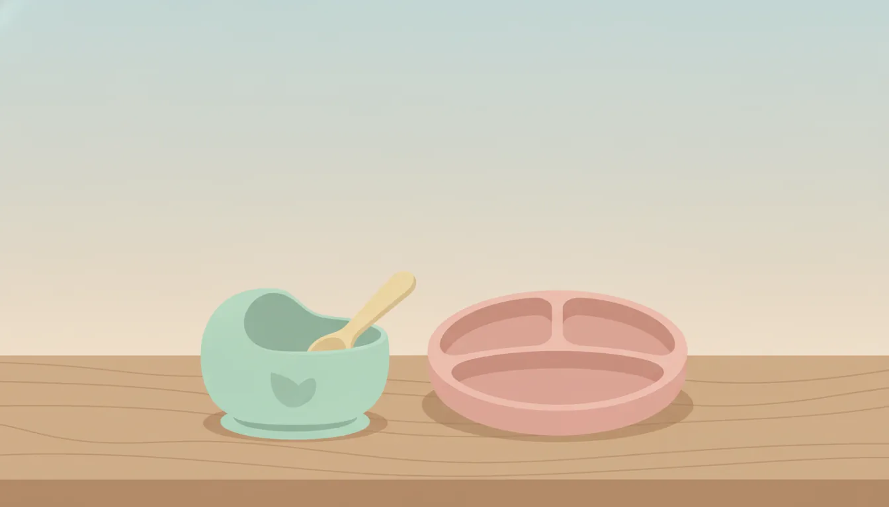

月齢別に選ぶ離乳食食器の素材・サイズの比較ポイント
公開日: 2026-08-14
本ページのリンクには一部アフィリエイトリンクが含まれます(#PR)。
🍼 離乳食食器はなぜ月齢で変える必要があるのか
離乳食が始まると、ついつい可愛いデザインだけで食器を選びたくなります。ただ、赤ちゃんの発達段階によって必要な機能はかなり違うものです。生後5〜6ヶ月頃の初期は「口に運んでもらう」段階ですが、9ヶ月を過ぎる頃からは自分でスプーンを持ちたがったり、手づかみ食べが始まったりします。同じ食器をずっと使い続けると、器の深さやフチの形状が合わず、食べこぼしが増えてしまうこともあるようです。月齢に応じた食器選びは、育児の負担を減らす一つの工夫と言えます。
🥣 初期(5〜6ヶ月)におすすめの素材とサイズ
離乳食を始めたばかりの時期は、まだ食べる量もごく少量です。小さめの器を選ぶと、食材の温度が下がりにくく、食べさせる側も量の調整がしやすくなります。素材については、シリコン製や強化磁器が候補に挙がります。シリコンは軽くて割れにくく、電子レンジ調理にも対応しているものが多いので扱いやすいでしょう。一方、強化磁器は熱伝導が穏やかで、口当たりが柔らかいという特徴があります。どちらも一長一短なので、家庭の使い方に合わせて選んでみてください。
🍚 中期・後期(7〜11ヶ月)は自食への準備を意識する
この時期になると、赤ちゃんが器に手を伸ばしたり、スプーンを掴もうとしたりする姿が見られ始めます。器の底に吸盤やすべり止めが付いているタイプは、テーブルからずれにくく重宝します。サイズはやや大きめでも構いませんが、フチが内側に少しカーブしているデザインだと、スプーンで食材をすくいやすく、練習にも向いています。素材はプラスチック(ポリプロピレン等)が軽量で扱いやすい一方、傷がつきやすいという面もあるため、耐熱性や耐傷性の表示を確認しておくと安心です。
🖐️ 手づかみ食べ期に注目したい形状のポイント
手づかみ食べが本格化する時期は、食器そのものよりも「こぼれにくさ」が重視されます。深さのある仕切り付きプレートは、品目ごとに分けられるので混ざりにくく、見た目にも食欲をそそりやすいという声もよく聞かれます。ただし仕切りが多すぎると洗いにくくなることもあるので、シンプルな2〜3分割くらいから試してみるのも一つの方法です。取っ手付きのカップやマグへの移行を考えている場合は、この時期から練習用として並行して使い始める家庭も多いようです。
♻️ 素材選びで押さえておきたい安全性の視点
離乳食食器は毎日使うものなので、耐久性と安全性の両方をチェックしておきたいところです。次のような点を確認しておくと選びやすくなります。
- 食洗機・電子レンジ・煮沸消毒など、家庭の消毒方法に対応しているか
- BPAフリーなど、素材の安全表示があるか
- フチや底に鋭利な部分がなく、なめらかに仕上げられているか
- 色や柄が食器用塗料としての安全基準を満たしているか
特に消毒方法との相性は見落としがちなポイントです。せっかく購入しても、普段使っている消毒方法に対応していないと出番が減ってしまうこともあります。
📏 サイズ選びで失敗しないためのチェックポイント
サイズについては「大は小を兼ねる」とは限りません。大きすぎる器は食材が広がって冷めやすく、赤ちゃんにとっても視界に入る情報量が多くなりすぎることがあります。逆に小さすぎると、量が増えてきたときにすぐ買い替えが必要になるかもしれません。月齢の目安表示があるものを参考にしつつ、実際の食事量を1〜2週間観察してから、次のサイズを検討するくらいのペースでも十分間に合います。収納のしやすさも含めて、スタッキングできる形状かどうかも見ておくとよいでしょう。
❓ よくある質問
Q. プラスチックとシリコン、どちらが長く使えますか?
使う頻度や家庭での洗い方によって差が出やすいところです。シリコンは柔らかく傷がつきにくい反面、色移りしやすい場合があります。プラスチックは軽量で扱いやすいものの、傷から匂いが残ることもあるため、定期的な状態確認をおすすめします。
Q. 月齢が変わるたびに買い替える必要がありますか?
必ずしも毎回買い替える必要はありません。仕切りの数や深さが変えられるタイプ、成長に合わせて使い方を変えられる食器も販売されています。今使っている食器で食べづらそうなサインが出てきたら、見直すタイミングと考えるとよいでしょう。
Q. 兄弟でお下がりを使っても問題ないですか?
傷や変色がなく、消毒がしっかりできていれば使い回すこと自体は珍しくありません。ただし劣化したプラスチック製品は匂いや傷が気になる場合があるので、状態を見て判断するのがよさそうです。
離乳食食器は「今の月齢に合っているか」を基準に見直すと選びやすくなります。素材・サイズ・安全性のチェックポイントを押さえつつ、赤ちゃんの様子を見ながら少しずつ買い替えていくくらいの気持ちで向き合うとよいでしょう。
ベビー用品の今の在庫から
 PR
PR
 PR
PR
 PR
PR
本ページのリンクには一部アフィリエイトリンクが含まれます(#PR)。